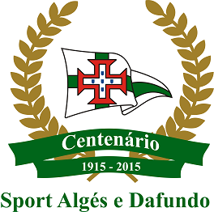

Minha Casa

O Sport Algés e Dafundo sempre será a minha primeira casa.
A minha mãe andava pelo clube grávida de mim. Este clube percorre
no meu sangue familiar há anos. O meu avô e a minha mãe foram atletas
olímpicos e tenho mais familiares que frequentaram o clube com imensa
paixão. O meu ídolo é o meu irmão, Miguel Catita. Nós praticamos
os mesmos desportos em conjunto. Uma combinação de judo, natação e
basquetebol foi a chave para ser um grande atleta.
Modalidades
Galardões:
- Comenda da Ordem Militar de Cristo (05/10/1930)
- Oficialato da Ordem de Benemerência (17/06/1937)
- Bons Serviços Desportivos (26/06/1965)
- Ordem do Infante (28/06/1990)
- Medalha de Mérito da Associação de Natação de Lisboa (1980)
- Medalha de Honra ao Mérito Desportivo (19/06/2016)
- Instituição de Utilidade Pública (12/11/1931)
- Troféu Olímpico concedido pelo Comité Olímpico Português (1957)
- Medalha de Ouro de Mérito Municipal da Câmara Municipal de Oeiras (2002)
Títulos do Basquetebol:
- Campeões Nacionais Iniciados Femininos (1987/88)
- Campeões Nacionais de Cadetes Masculinos (1963/64; 1971/72; 1982/83; 1989/90)
- Campeões Nacionais Cadetes Femininos (1993/94; 1996/97; 2000/01; 2012/13)
- Vencedores da Taça Nacional de Cadetes Femininos (2011/12)
- Campeões Nacionais Júniores Masculinos (1984/85; 1990/91; 1991/92)
- Campeões Nacionais Júniores Femininos (1986/87; 2005/06; 2012/13; 2013/14)
- Campeões Nacionais Séniores Masculinos da 2ª divisão (1958/59; 1959/60; 1969/70)
- Campeões Nacionais Séniores Masculinos da 3ª divisão (1990/91)
- Campeões Nacionais ProLiga Séniores Masculinos (2011/12)
- Vencedores da Taça de Portugal de Séniores Femininos (1981/82; 1982/83; 1984/85; 1985/86; 1986/87; 2012/13)
- Campeões Nacionais Séniores Femininos da 1º Divisão (1982/83; 1984/85; 1985/86; 1987/88; 2003/04)
- Campeões Nacionais Séniores Femininos da 2º Divisão (1998/99; 2005/06; 2011/12)
- Vencedores da SuperTaça Séniores Femininos (1985/86; 2010/11; 2011/12; 2012/13)
- Vencedores na Liga Feminina Séniores (2011/12; 2012/13)
Títulos do Judo:
- 11 atletas olímpicos entre Seoul 1988 e Pequim 2008
- Medalha de Bronze -81kg nos Jogos Olímpicos de Sidney 2000 (Nuno Delgado)
- Vice Campeão da Europa -81 kg Campeonato Europa de Seniores 2003 (Nuno Delgado)
- Medalha de Ouro -81kg no Campeonato da Europa de Seniores 1999 (Nuno Delgado)
- Medalha de Prata +100kg no Campeonato da Europa de Seniores 2002 (Pedro Soares)
- Medalha de Bronze +100 kg no Open Europeu 2002 (Pedro Soares)
- Medalha de Bronze -60kg no Campeonato da Europa de 1998 (Pedro Caravana)
- Medalha de Bronze -66kg no Campeonato da Europa de Seniores 2008 (Pedro Dias)
- Campeões Nacionais de Equipas Seniores Masculinas (1986, 1987, 1988, 1989, 1990, 1991, 1992, 1993, 2001, 2002, 2003, 2004)
- Campeões Nacionais de Equipas Seniores Femininas (1987, 1989, 1990, 1998, 1999, 2001, 2009)
- Campeões Nacionais de Equipas Juniores (1989, 1994, 1995, 1996, 1997, 2001)
- Medalha de Bronze -66kg no Campeonato da Europa Sub23 2000 (Pedro Dias)
- Medalha de Bronze -73kg no Campeonato da Europa de Sub23 2010 (André Alves)
- Medalha de Bronze -73kg nas Universiadas em Kazan (André Alves)
Títulos do Natação:
- 30 participações Olimpicas entre 1952 e 2012
- Campeões Nacionais de Clubes por Equipas (1979, 1983, 1993, 1995, 2001, 2002, 2003)
- Campeões Nacionais de Clubes Masculino (1992, 1993, 1994, 1996, 1997, 1998, 2000, 2001, 2002, 2003, 2005, 2006)
- Campeões Nacionais de Clubes Feminino (1987, 1993, 1995)
- Vencedor da Taça de Portugal Formação (2014)
- 423 Titulos de Campeão Nacional Absoluto
- 1828 Titulos de Campeão Nacional em Categorias
- 1467 Records Nacionais Absolutos
- 360 Titulos de Campeão Nacional Master
- Campeão de Clubes Master 2014 e vencedor da Taça De Portugal Master 2014
- 15 medalhas em Campeonatos do Mundo e Europa Master
- 39 participações em Campeonatos do Mundo/li>
- 45 participações em Campeonatos da Europa
- 2 participações em Campeonatos do Mundo Junior
- 31 participações em Campeonatos da Europa Junior
Títulos do Ginástica Rítmica:
- Vencedor 17 anos consecutivos da Taça de Portugal de 1994 a 2011
- Campeões Nacionais Seniores Individuais (1990, 1991, 1992, 1993, 1994, 1995, 1996, 2000, 2001, 2002, 2004, 2005, 2009, 2013)
- Campeões Nacionais de Conjuntos Seniores (1990, 1991, 1992, 1993, 1994, 1995, 1996, 1997, 1998, 1999, 2001, 2002, 2005, 2006, 2010)
- Campeões Nacionais Juniores Individuais (1998, 1999, 2001, 2002, 2009)
- Campeões Nacionais de Conjuntos Juniores (1996, 1997, 1998, 1999, 2000, 2002, 2009, 2012)
- Campeões Nacionais Individuais de Juvenis (2010 e 2012)
- Campeões Nacionais de Conjuntos Juvenis (2012 e 2013)
- Campeões Nacionais Individuais de Esperanças (1995, 1996, 1997, 1999, 2001, 2011)
- Campeões Nacionais de Conjuntos Esperanças (1994, 1996, 1999, 2001, 2002, 2010, 2013)
- Campeões Nacionais de Conjuntos Mini (1994 e 1998)
- Medalha de Bronze no Campeonato Nacional Individual Sénior (2007)
- Medalha de Prata no Campeonato Nacional Individual Sénior (2011)
- Vice Campeões Nacionais de Conjuntos Sénior (2007 e 2013)
- Campeões Nacionais da 2ª divisão de Esperanças/Iniciadas (2008, 2009, 2013)
- Campeões Nacionais da 2ª divisão de Juvenis (2008, 2009, 2010, 2011, 2012)
- Campeões Nacionais da 2ª divisão de Juniores (2011, 2012, 2013)
De João Catita